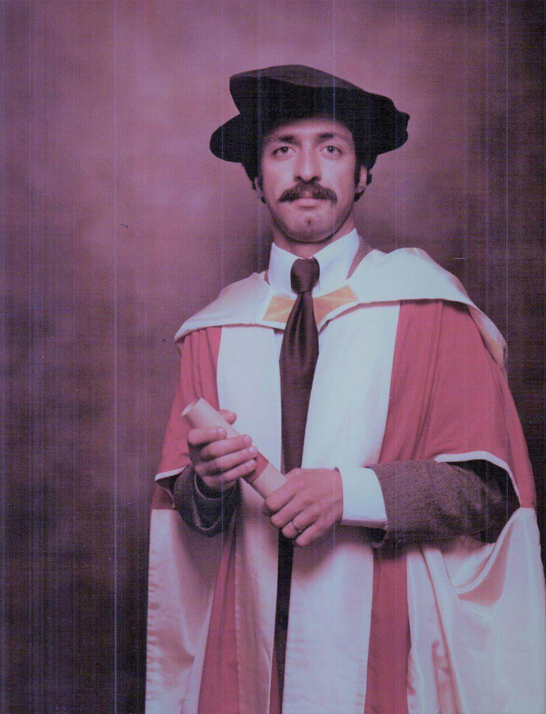

Is it dialogue?
In 1990, Hamid Lesan and Nigel Seel described a machine you could hold a conversation with — without typing a single character. It talked, you answered, and step by step a plan took shape. The machine below is built on theirs. Theirs, called the Task Organiser, arranged project plans; this one runs a smaller errand anyone can follow: helping two people fix a time to talk.

Try it before reading on. Notice the one rule: you never type. At every moment the machine works out everything you could say next, and you pick one.
Everything you just said, the machine had already counted. The strip at the top of its screen is the whole of what it knows. Your half of the conversation was chosen by you, word by word — but composed in advance, by someone else.
Their question
Here is what makes their paper worth remembering. Having built the machine and shown that it worked, Lesan and Seel stopped and asked, in a section of their own paper, whether what it does deserves the word. The section's title is the title of this page: Is it dialogue? A real conversation, they said — borrowing from the philosopher Paul Grice — needs each side to mean something, and to want the other to recognise what they mean. Their machine speaks fluently, helpfully, always to the point. But whose intentions is it carrying?
Click any line of your transcript above — the machine's or your own — and their question will be put to that sentence.
The machines we talk to now
You have this kind of conversation every day now. You type something to a language model — one of the fluent assistants that answer anything — and an answer comes back; it feels far freer than walking through menus. This page itself was made that way.
One difference is easy to miss. The 1990 machine could show you, at any moment, the complete list of everything you could say — the number sat on the screen. For your conversations with an assistant, no such list can be shown to anyone. The intentions are still set before you arrive, by people you will never meet; there is simply no page they can be printed on. The question has not gone away. It has just stopped being asked.
So the next time an assistant answers you — warm, fluent, helpful — ask it Lesan and Seel's question. Is this dialogue? Whose intentions are in the room? They asked it of their own machine, in public, and answered against themselves. That is the part worth repeating.
H. Lesan & N. R. Seel, “A Conversational Interface to a Constraint-Satisfaction System”, ICL Technical Journal, May 1990, 82–91. The interactive on this page is the journal's addition and is not part of the original work.